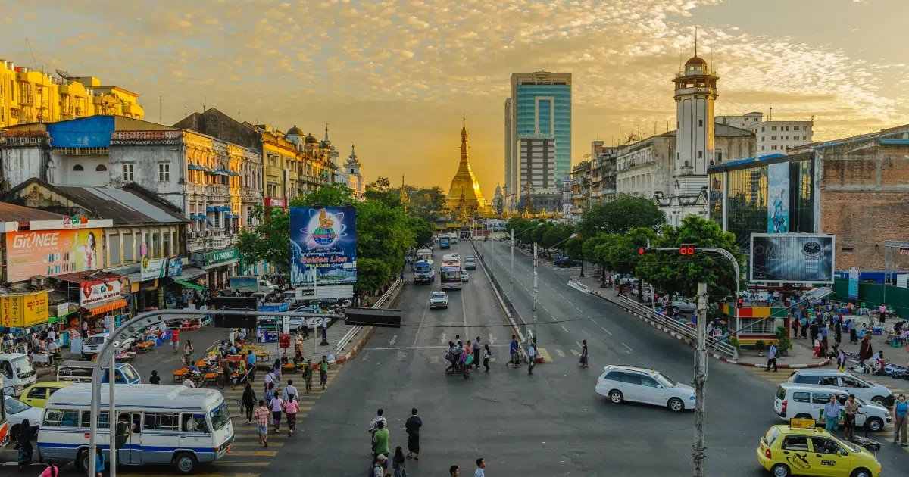
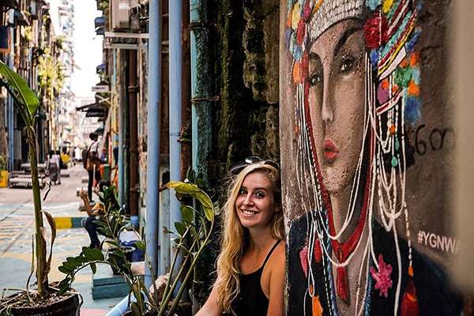

The Pleasure of Travelling in Myanmar
Jim Davis
I am an ardent traveller and most of the time I like travelling alone. Travelling alone is a pleasure if you love your company. You can go anywhere you want, eat anything you want and plan a trip according to your whims and fancies.
I recently came back from a solo vacation in the mysterious land of Myanmar. The fortnight that I spent in the country was a life-altering experience for me. I hadn’t seen such warmth in the local people. I was welcomed with warm smiles, invited into their homes with open arms and given the right kind of advice that helped me enjoy a trip of a lifetime.
Read on to know why my experience in Myanmar was unforgettable and some other things about my trip.
The Friendly Locals
The locals of Myanmar were some of the friendliest people I have ever met in any country. With their help, I had no problems roaming around the country. Most of them didn’t speak English, but that didn’t stop me from communicating with them. We spoke through sign language and clearly understood each other.Wherever I went, I met children full of life, adults going about their own lives with happy smiles on their faces, and old people who gave me the kindest smiles.
Safe and Secure Travel Option

Myanmar is a safe country to travel to for all kinds of travellers. I met solo women travellers,families who were travelling with small kids and elders, and adventurous backpackers. All of them gave me the feeling that Myanmar was one of the safest countries they had travelled to.Most of the local people follow conservative Buddhism, which automatically means following a non-violent way of life. Crime against foreigners is extremely low. Instead, the locals treat each other and tourists with the utmost respect. The monks were the kindest people. Young or old, they smiled at me with such warmth. All you will find here is love, nothing else.
Exploring the Country
Myanmar is well-connected by rail, road and air. Whatever your choice and budget, you will be able to travel comfortably in the country. I love road travel and prefer it any day to air travel. I travelled on buses a lot. They were cosy and convenient. Taking overnight buses saved me time and hotel room money for the night. I would get in, tuck myself under a thin blanket and sleep all the way through.

Travelling as a Solo Woman
Women are generally respected in the country and so are tourists. This was clear when I asked some of the female solo travellers I met there. One of them said that when she visited Kayah to see the long-neck women, she was invited to their homes with open arms. They made her wear one of their brass neck coils and take photos with them for their memory.Another lady told me that she got lost while roaming around in Mandalay one night, and her phone was not working properly. A local man escorted her back to her hotel. When she offered to give him some money as a reward for his service, he simply bowed, folded his hand in the namaste gesture and left.I was really touched hearing these stories. Such gestures never fail to rekindle one’s faith in humanity.
The Places I Visited
Most travellers visit Yangon, Mandalay and Bagan. But why only explore the common destinations, right? So, along with these three, I packed in a few less frequented places. Below was my itinerary.
First, I landed in Yangon and explored the city for three days.
Then I took a train to Mandalay. I spent a day there exploring the must-visit places in Mandalay. The next day, I took a trip to Mingun in the morning to see the Mingun Bell and Amarapura in the evening to see the beautiful sunset from the iconic U Bein Bridge.Next morning, I took the daily boat cruise to Bagan. I explored Bagan for another two days before taking a bus back to Mandalay.
By this time, I was desperate to escape the tropical weather and hence set off for Hsipaw, the small hill town popular for its trekking routes. I took a train ride from Mandalay to Hsipaw and passed through the famous Gokteik Viaduct. The tall pillars of the viaduct, rising hundreds of metres above the ground, were stunning, to say the least.With the layers of green hills and stunning hiking trails, Hsipaw soon became my favourite destination in the country. I spent 2 days walking around Hsipaw and then did a 3-day trek to Inle Lake. Inle Lake was charming and mesmerising.After spending two days at Inle, I took the train to Lashio and got down at Pyin Oo Lwin, another popular hill station of Myanmar. I finally returned to Mandalay from Pyin Oo Lwin and flew back home.
My itinerary was spontaneous, gathering knowledge about the places and deciding my next destination on the spur of the moment. Words cannot justify my experience in this wonderful country. I recommend it to each and every wandering soul. A world of wonders awaits everyone at Myanmar.